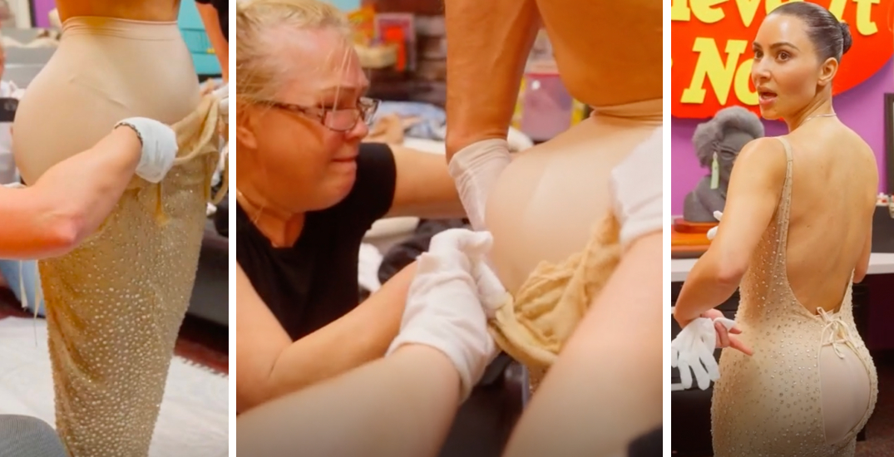
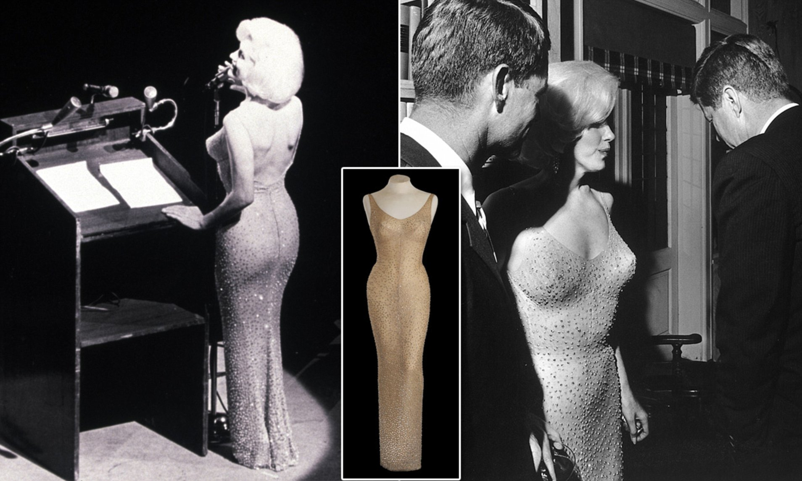

Fashion Historians Appalled
By Kim K’s Met Gala Outfit
At the Met Gala's celebration of the gilded age, Kim Kardashian wore Marilyn Monroe’s JFK “Happy Birthday” dress and caused quite a stir. Mostly because Fashion historians felt that this created an unethical president for the treatment of Fashion history.
Key Points:
- Kim Kardashian wore the original dress Marilyn Monroe’s JFK “Happy Birthday” dress while walking down the red carpet and bragged that she had to crash diet to fit into it ( which was a controversy in itself).
- The dress still didn’t fit, the material was dragging and makeup and sweat have affected the material irreparably; well, at least that’s what Fashion conservators had to say. I mean, what do they know, they just trained their whole life to keep the Fashion history alive.
- Marilyn’s dress is usually stored in a temperature-controlled vault at Ripley’s Believe It Or Not Museum in Orlando, Florida, the gown was transported to Kardashian’s home in Calabasas, California by private plane and accompanied by guards.
- Justine De Young, associate professor of Fashion history at the Fashion Institute of Technology in New York, told People magazine the stunt was “irresponsible and unnecessary… An iconic piece of American history should not be put at risk of damage for an ego boost and photo op.
- Historical garments can show us how someone moved through life, their DNA is tangled in the material, and their clothing is filled with evidence of life. Fashion is one of the most intimate parts of the past we got and it is extremely fragile; it can easily disintegrate. Hence keeping it safe is of utmost importance.
- Fashion historians criticized the museum's decision to lend the dress to Kim not only because it is irresponsible but because it is against the international museum's code of ethics.
- "In the ’80s, a bunch of costume professionals came together to state a resolution that historic costumes should not be worn. So my worry is that colleagues in historic costume collections are now going to be pressured by important people to let them wear garments."
- Monroe’s gown was made of a delicate fabric called souffle. It’s stretchy and resilient when it’s new, but becomes weaker and more brittle with age. It’s embroidered with heavy beadwork — thousands of hand-sewn beads. “Gravity can do a lot of damage,” says Kevin Jones, curator of the FIDM Museum at the Fashion Institute of Design & Merchandising. “Whenever you move, something is giving way, even if you can’t see it. Under a microscope, it would show all these little splits. And over time that would be a big problem. ”

The dress didn't fit, the back part of the dress was just loosley laced and then covered with fur.

Read more Fashion news.